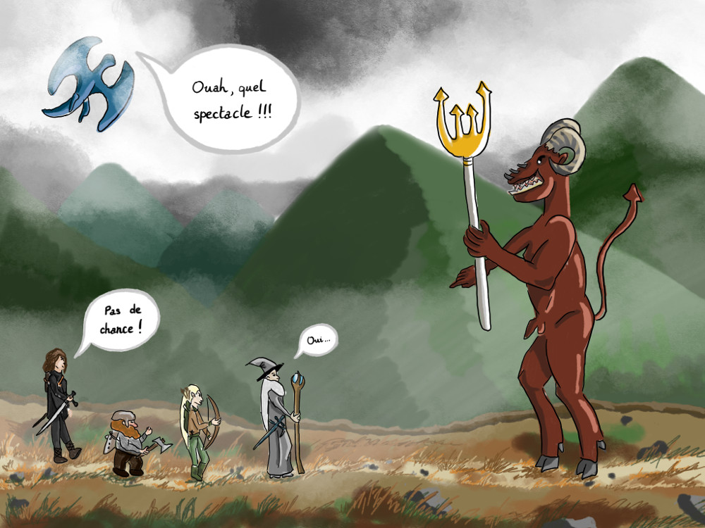

Défi de dessin hebdomadaire : Épique diable oui
Publié le 05/12/2018 dans Dessin.
Le thème de la semaine est épique, diable et oui. Le côté épique renvoie pour moi à une grande aventure, une sorte de quête, à accomplir dans un monde de fantasy; d’où le dragon. Il y a donc ici une compagnie qui se retrouve confrontée au diable, voulant leur barrer le chemin. Ils acceptent la fatalité et disent oui au destin, poursuivant malgré tout. Le dragon assiste au spectacle.
